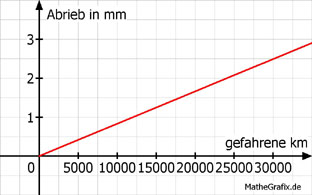

Lineare Funktionen Aufgabe 94 Die Profiltiefe bei Autoreifen nimmt gleichmäßig ab. Nach 20 000 km war sie 4 mm, nach 32 000 km noch 3 mm. a) Wie viel km kann man mit dem Reifen noch fahren, wenn eine Profiltiefe von mindestens 1 mm vorgeschrieben ist? b) Um wie viel mm nimmt die Profiltiefe pro 10 000 km ab? c) Welche Profiltiefe hatte der Neureifen in mm? a) Die Profiltiefe hat nach einer Fahrleistung von 32 000 km - 20 000 km = 12 000 km um 4 mm - 3 mm = 1 mm abgenommen. Bis zur Mindestprofiltiefe sind es noch 3 mm - 1 mm = 2 mm. Für 2 mm Abrieb kann man noch 2 * 12 000 km = 24 000 km fahren. b) Nach 12 000 km beträgt der Abrieb 1 mm 1 Nach 1 km beträgt der Abrieb ------- mm 12000 10000 Nach 10 000 km beträgt der Abrieb -------- mm = 0,83 mm 12000 Abrieb = (0,83 mm/gefahrene 10000 Kilometer) * gefahrene km  c) Nach 20 000 km beträgt der Abrieb 2 * 0,83 mm = 1,66 mm Der Neureifen hatte eine Profiltiefe von 4 mm + 1,66 mm = 5,66 mm